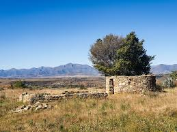
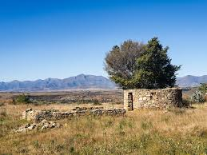
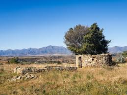

Landmarks
Eswatini is home to many iconic landmarks, from historical sites to natural wonders. Here are some of the most famous landmarks:
.jpeg "Morija Museum & Archives") 

.jpeg "Kome Caves")
Government Structure
Monarchy: King Letsie III serves as the ceremonial head of state. The king's role is largely symbolic, with no executive powers.
Prime Minister: The head of government is the Prime Minister, currently Sam Matekane, who took office on October 28, 20222. The Prime Minister is the leader of the majority party in the National Assembly.
Parliament: Lesotho's Parliament is bicameral, consisting of the Senate and the National Assembly. The National Assembly has 120 members, elected for a five-year term, with 80 elected in single-seat constituencies and 40 by proportional representation1.
Traditional Ceremonies and Practices
Initiation Rites: Boys and girls undergo initiation ceremonies called "lebollo" and "bojale," marking their transition to adulthood. These rites are significant cultural events involving traditional education and rituals.
Chieftaincy: Traditional leadership is an integral part of Basotho culture, with chiefs playing crucial roles in governance and community matters.
Economic Overview
GDP: Lesotho's GDP was approximately $2.73 billion USD in 2019. The GDP per capita is around $878 USD as of 2023.
Growth Rate: The economy expanded by 0.9% in 2023, driven mainly by the public sector and construction activities. The GDP growth rate is projected to average 2.4% over 2024-2025.
Primary Languages
Sesotho
Status: Sesotho is the national and official language of Lesotho.
Usage: It is spoken by nearly all Basotho people and is used in daily communication, education, and media.
Features: Sesotho is a Bantu language known for its rich oral tradition and poetic forms of expression.
English
Status: English is also an official language.
Usage: It is used in government, business, and formal education. English serves as a lingua franca for communication with non-Sesotho speakers and in international contexts.
1. Basotho
Population: The vast majority of Lesotho's population consists of the Basotho people.
Language: The Basotho primarily speak Sesotho, the national language of Lesotho.
Culture: The Basotho culture is rich with traditional practices, music, dance, and a strong sense of community and family. Important cultural symbols include the Basotho blanket and the mokorotlo (a traditional hat).
Eswatini is home to many iconic landmarks, from historical sites to natural wonders. Here are some of the most famous landmarks:

Maseru
Lesotho has several well-known universities, including:
Lesotho has a number of key ministers in its government. Here are some of the prominent figures:
Dr. Ntoi Rapapa
Dr. Retšelisitsoe Matlanyane
Hon. Motlatsi Maqelepo MP
.jpeg "Dr. Ntoi Rapapa")
.jpeg "Hon. Motlatsi Maqelepo MP")
Recent GDP Performance
2023: The economy expanded by 0.9%. This growth was driven mainly by the public sector and construction activities3.
2022: The GDP growth rate was 1.29%, a slight decline from 1.85% in 2021.
2021: The economy grew by 1.85%, marking a recovery from the -7.46% contraction in 2020.
2020: The GDP shrank by 7.46%, largely due to the impact of the COVID-19 pandemic.